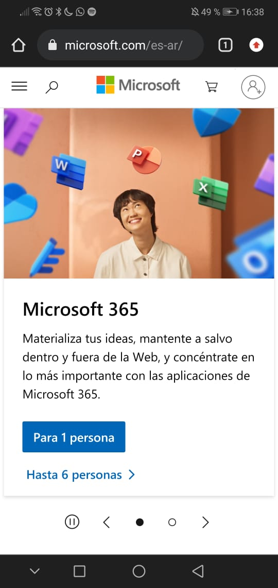

Contrast on Spotify
Spotify's website employs contrast by using bold and vibrant colors for call-to-action buttons and features, making them stand out against the background and encouraging user interaction.
White space and clean design on Drop-Box
Dropbox's website utilizes ample white space and clean design to create a clutter-free and user-friendly interface, allowing users to focus on essential actions like file sharing and storage.
Alignment on Microsoft
Microsoft's website showcases alignment by arranging content in a structured manner, ensuring that text, images, and icons are properly aligned, which enhances readability and aesthetics.
